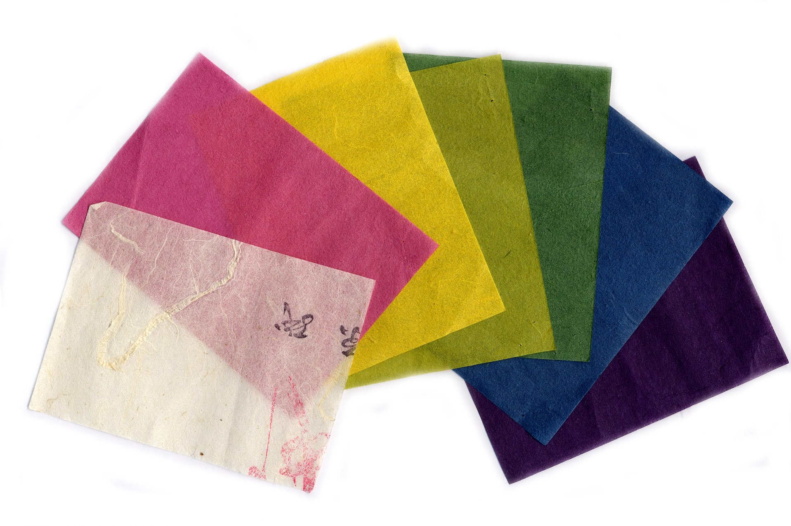
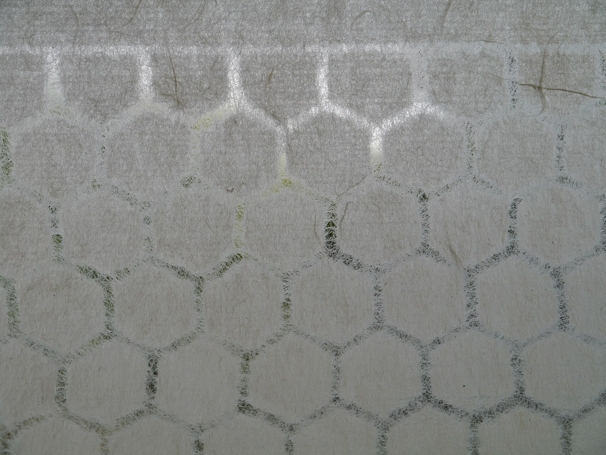

Paper made slowly.
Handcrafted washi and quiet printed matter. A warm rice-paper canvas, restrained ink hierarchy, and the patience of hand-craft.
Study the fibersThree fibers, three temperaments
Select a fiber. The tonal field and its reading change together — quietly, without ceremony.
Long, strong fibers produce a resilient sheet with subtle sheen. The workhorse of traditional washi — used for prints, screens, and conservation repair.
Made by hand, dried by sun
Every sheet passes through the same four rituals. Nothing is accelerated.
Steam and strip
Branches are steamed, the bark stripped and bleached in cold river water — never chemically forced.
Beat the fiber
Fibers are beaten by hand until they loosen, preserving the length that gives washi its strength.
Form the sheet
The pulp is rocked on a bamboo su screen — front to back, side to side — until the sheet finds its even weight.
Dry in the sun
Sheets are brushed onto wooden boards and dried in open air. A winter's batch takes a full season.
Documented paper grades
The workshop's current ledger. Weights and applications are measured, never estimated.

